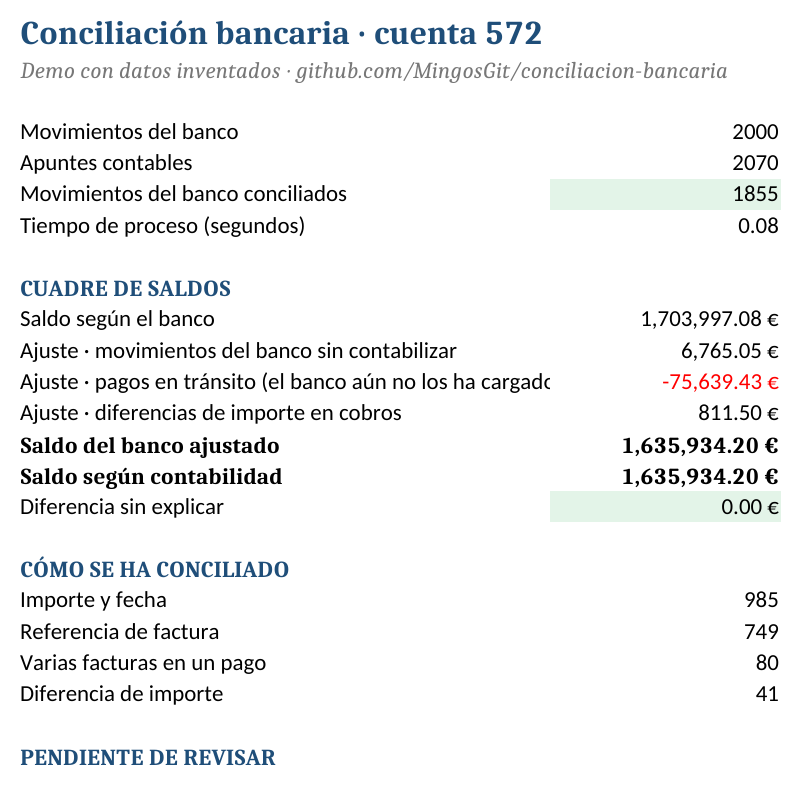

02
El Excel



El extracto del banco y la contabilidad nunca dicen lo mismo a fin de mes. Este programa cruza 2.000 movimientos contra 2.070 apuntes en menos de un segundo y deja la diferencia de saldos explicada al céntimo.
Le das el extracto exportado del banco y el mayor de la cuenta 572. Encontrar los movimientos que coinciden exactamente es lo fácil; lo que cuesta horas es todo lo demás:
Al final, la diferencia de 68.062,88 € entre los dos saldos queda justificada partida a partida, y cada movimiento pendiente sale con su asiento propuesto.

Cuatro pasadas, de la más segura a la menos:
Si el concepto del banco cita la factura (TRANSF DE ÓPTICA GRÀCIA FV202601599), se cruza directamente con ella, aunque el importe no coincida del todo.
Mismo importe y fecha valor entre 0 y 5 días después del apunte. Si hay empate, decide el parecido del nombre (aunque el banco lo haya recortado) y después la fecha más cercana.
Para cada transferencia sin pareja, busca qué combinación de 2 a 5 facturas del mismo cliente suma exactamente ese importe.
Mismo cliente y fechas, pero con una pequeña diferencia de importe: se cruza y la diferencia queda señalada para revisarla.
Saldo del banco − movimientos sin contabilizar + pagos en tránsito − diferencias de cobro = saldo contable. Si no da exactamente 0,00 €, algo se ha escapado.
Todos los importes se manejan en céntimos enteros para que la suma de 2.000 movimientos cuadre exacta, sin errores de redondeo.
Fechas valor que no coinciden con la contabilidad, coma decimal, punto y coma como separador y conceptos recortados.
Los tests comprueban que los 2.000 movimientos acaban exactamente donde deben y que ninguno se usa dos veces.
Lo dudoso no se fuerza: comisiones, tarjeta y diferencias salen separadas, con la cuenta y el asiento propuestos para que alguien lo valide.